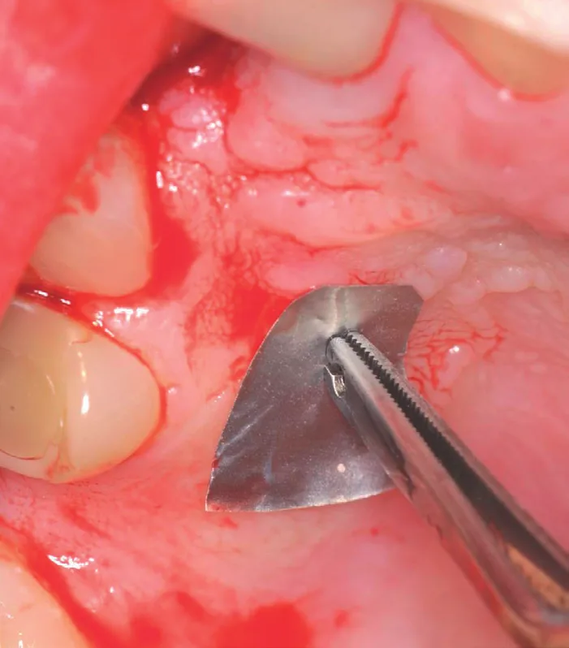
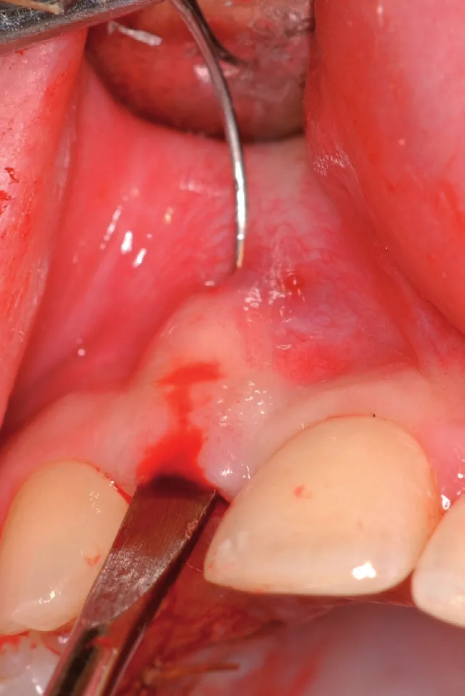

نسخه استخراجشده؛ ترجمه یا تأیید علمی انجام نشده است. وضعیت: captured
برداشت گرفت. بافت همبند زیرمخاطی بهصورت یک ورقهی بافتی برداشته میشود و مخاط پالاتال رویی در موقعیت اصلی خود بازگردانده میشود تا کام دِاپیتلیالیزه نشود.
برشهای کام — و عددی که از نکروز جلوگیری میکند:
• تکنیک بسته — برای پرهیز از فلپ پالاتال، فقط یک برش افقی در امتداد کام زده میشود، ۲ تا ۳ میلیمتر از حاشیهی لثهی پالاتال، برای پیشگیری از نکروز لثهی اطراف دندانها؛ پاکت زیر مخاط بدون برش عمودی ساخته میشود.
• برش دوم ۱ تا ۲ میلیمتر از حاشیهی برش اول، با تیغ زاویهدار به سمت محل تلاقی شلفهای عمودی و افقی کام. لبههای گرفت با برشهایی جدا میشوند که فقط از میان گرفت میگذرند (بدون برش خارجی) و گرفت با الواتور پریوستیال کوچک خارج میشود.
• تکنیک باز — دو برش عمودی که عرض گرفت را تعیین میکنند و یک برش افقی حدود ۲ میلیمتر از سولکوس لثهای دندانهای ماگزیلا، و بلند کردن فلپ پالاتال.
فلپ پالاتال باید کاملاً نازک باشد، چون حفظ ضخامت بافت همبند زیرین مطلوب است. گرفت با کمترین فشار ابزار برداشته میشود.
ابعاد: تیغ معمولاً ۱۰ میلیمتر طول دارد که همان عرض معمول گرفت است. در یک نمونهی بالینی، قطعهای ۱۰×۱۵ میلیمتر برداشته و دو نیم شد تا برای هر دو سمت کفایت کند. توصیه میشود ۲ میلیمتر عرض اضافه در هر دو لبهی عمودی قدامی و خلفی در نظر گرفته شود تا گرفت خیلی کوچک برداشته نشود؛ و برش افقی باید کمی بلندتر از طول لازم برای گرفت باشد.
ساختن پاکت در محل گیرنده:
• یک برش کرستال در عرض ناحیهی بیدندانی زده میشود — کمی پالاتال به ریج و تا کنار پاپیلا، بیآنکه پاپیلا را درگیر کند — و پاکت بدون برش عمودی ساخته میشود.
• با تیغ کوچک ۱۵c در سطح پریوستیال — عمیق، نه سطحی — پاکتی ساخته میشود که معمولاً ۱۰ تا ۱۲ میلیمتر عمودی است و قاعدهی اپیکالش پهنتر از برش کرستال است.
• در یک نمونه، پاکت ۱۰ میلیمتر عمودی و ۱۰ میلیمتر افقی در بخش اپیکال بود که در کرست به ۴ میلیمتر باریک میشد؛ در نمونهای دیگر پاکت دستکم ۱۰ میلیمتر اپیکال به کرست گسترش یافته بود.
• پاکت باید کمی بزرگتر از گرفت باشد و گسترهی جانبیاش در ناحیهی اپیکال دستکم تا لاینانگل دندانهای مجاور برسد.
صفحهی دیسکسیون: صفحهی ایدهآل سوپراپریوستیال است، اما باید مراقب بود پاکت به قیمت ضخامت بافت لبیال ساخته نشود. در صورت نیاز، دیسکسیون باید نزدیک استخوان زیرین نگه داشته شود تا ضخامت لثهی رویی حفظ و از فنستراسیون بافت نرم مخاط رویی جلوگیری شود.

جایگذاری و بخیه. گرفت باید در موقعیت مطلوب محکم شود. موقعیت عمودی و جهتگیری گرفت روی کرست آلوئولار را سه چیز تعیین میکند: جایگذاری دقیق بخیهها، ساختن پاکتی خوشتعریف، و جلوگیری از تا شدن یا جمع شدن گرفت هنگام قرار دادن.
بخیهها باید گرفت را محکم در برابر بسترهای زیرین و رویی نگه دارند تا هماتوم تشکیل نشود. سطح گرفت باید صاف و بدون برجستگی تریم شود و محیط آن به اندازهی الگوی فویل درآید. برای تعیین موقعیت عمودی، یک یا دو بخیهی تشکی از سمت وستیبول گرفت را میگیرند و بهآرامی گره زده میشوند.
و یک هشدار مهم دربارهی بخیه در رول پالاتال: بخیهی نگهدارندهای که از مخاط لبیال میگذرد و بافت رولشده را میگیرد باید با احتیاط زده شود و از کشش عمودی بیشازحد پرهیز شود، چون به مهاجرت اپیکال حاشیهی لثه میانجامد. این را دستکم نگیر: اجتناب از رتراکشن عمودی حاشیهی لثه حیاتی است، چون موقعیت نهایی لثه را خراب میکند.
حالا اعداد — چقدر واقعاً میتوان اضافه کرد؟
• گرفت بافت همبند زیراپیتلیال میتواند لثه را ۱ تا ۲ میلیمتر ضخیمتر کند، بسته به ضخامت گرفت و انقباض آن حین ترمیم.
• همین گرفت میتواند روی کرست آلوئولار قرار گیرد و ارتفاع عمودی ریج را ۱ تا ۲ میلیمتر بیفزاید.
• گرفت زیراپیتلیال با تکنیک پاکت میتواند بهطور قابلپیشبینی به افزایش ۲ میلیمتری برسد.
• رول پالاتال معمولاً تنها ۱ میلیمتر افزایش میدهد و گاهی ۲ میلیمتر. اگر حدود ۱ تا ۲ میلیمتر بافت نرم برای کاهش شفافیت لثه لازم است، رول پالاتال هنگام اکسپوز کردن ایمپلنت قابل استفاده است.
• گرفت بینابینی (interpositional) میتواند حدود ۲ تا ۳ میلیمتر عرض بیفزاید، اما با گذر زمان منقبض میشود و ۲۰ تا ۴۰ درصد ضخامت اولیهاش را از دست میدهد. پس همیشه باید انتظار جمعشدگی داشت.
محدودیتهای رول پالاتال: این تکنیک در نواحیای که روگاهای کام ضخیماند دشوار است، چون بلند کردن یک فلپ پالاتال نازک را غیرممکن میکند. همچنین ضخامت بافت پالاتالِ جابهجاشده و برهنه ممکن است افزایش را به تنها ۱ میلیمتر محدود کند.
و مهمترین سقف این درس: اگر افزایش لازم از ۳ میلیمتر فراتر رود، ممکن است لازم باشد محل دوباره با پیوند بافت سخت افزایش یابد — چون گرفتهای بافت همبند ضخیمتر از ۳ میلیمتر در محل تکایمپلنت ممکن است رگزایی مجدد نشوند و در نتیجه کمتر قابلپیشبینیاند.
حساب کردن نقص، عدد به عدد:
• برای نقصهای ۲ میلیمتری: دستکم ۱ میلیمتر را میتوان بهطور قابلپیشبینی از رول پالاتال گرفت و ۱ میلیمتر باقی را از کانتور لبیال پروتز نهایی.
• اگر افزایش لازم ۳ میلیمتر باشد: ۲ میلیمتر از گرفت بافت همبند و ۱ میلیمتر نهایی از کانتور لبیال زیرلثهای ترمیم نهایی.
ببین چه اتفاقی میافتد: بخشی از راهحل، جراحی نیست — پروتز است. و ۱ تا ۲ میلیمتر عرض کرستال اضافه که گرفت زیراپیتلیال میدهد، همان چیزی است که به دندانپزشک ترمیمی اجازه میدهد پروفایل بافت نرم زیبا و متقارنی بسازد.

نوع سؤال: ساخت کلمه · 3 خانه
حروف منبع: خ · ت · س